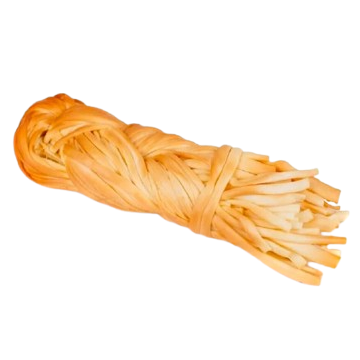
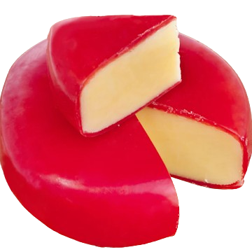
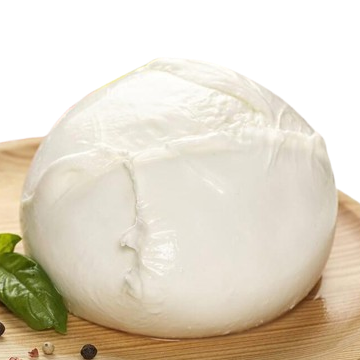
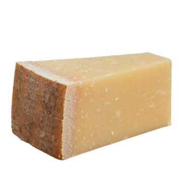
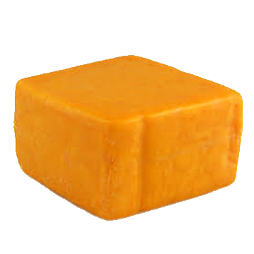
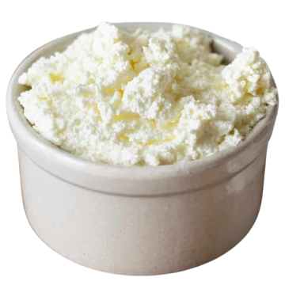
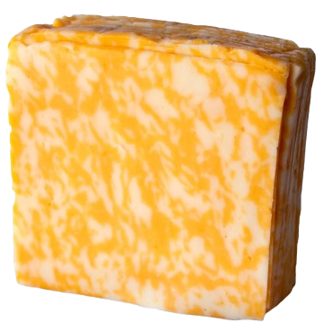
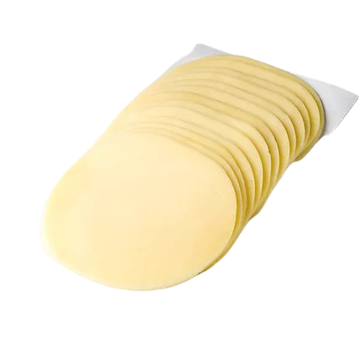
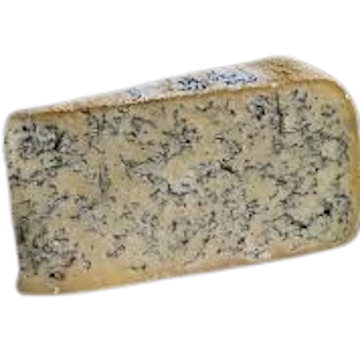

Go back to main page here.
This box should include a basic description of the purpose the site holds. This site will navigate users to 10 different cheeses so they can learn more about the taste, production, and purchase locations.








